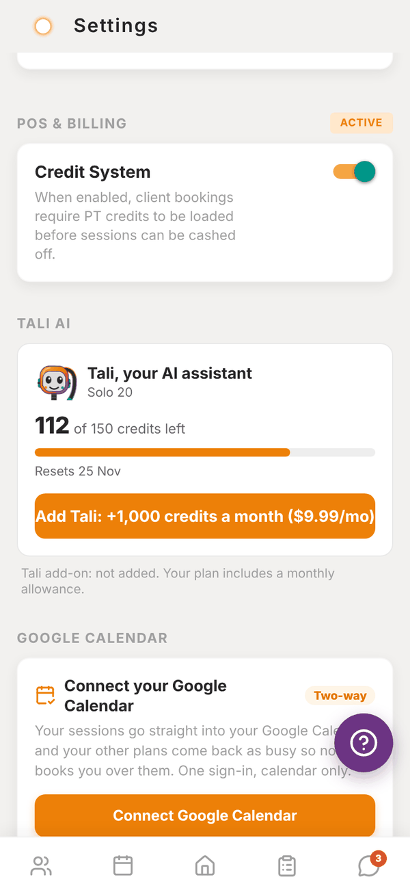
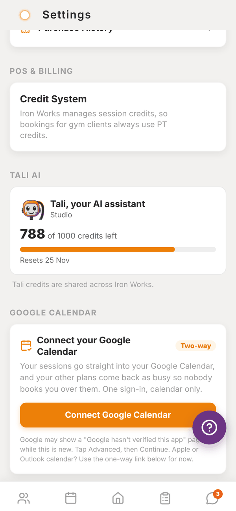
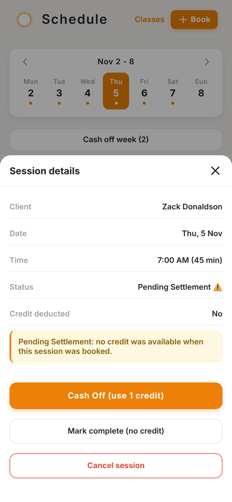
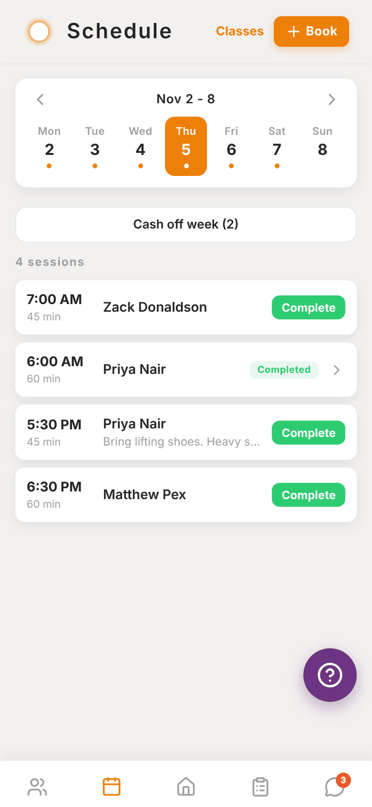
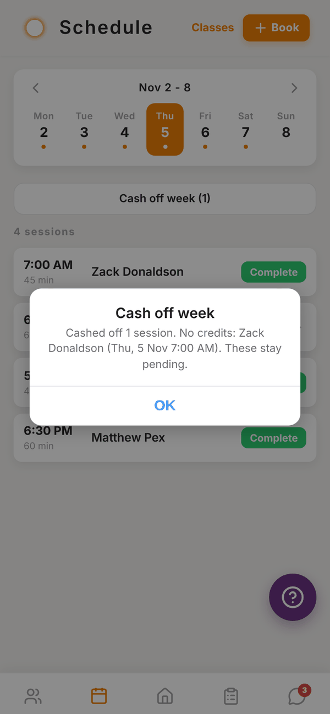

Totality for trainers
PT credits, packages and settling sessions
How session credits work, the credit system switch, pending settlement, Cash Off and Cash off week.
Credits are how Totality keeps track of paid sessions. One credit pays for one PT session. When you book a session, a credit is used. When there isn't one, the session waits as Pending Settlement until it's paid for.
The credit system switch#
- Independent trainers choose. In Settings > POS & BILLING, the Credit System switch decides. When it's on, bookings use credits. When it's off, bookings don't touch credits and nothing is ever pending. Turning it off asks Disable credit system? first.
- Trainers at a gym don't have a switch. The gym manages credits, so bookings for gym clients always use them.


Where credits come from#
- PT packages: a client on a weekly package (for example "3 x week PT") gets that many credits each week. The package name shows on their profile under PT credits. Gym packages are set up by the gym admin.
- Generate this week: on the client's profile, creates this week's credits from their package if they haven't been made yet.
- Add Credit: on the client's profile, adds one credit by hand. Use it when a client pays you outside the app.
- Selling packages (independent trainers): create a PT Package product in My Products. When a client buys it, they get that many credits.
The client's profile shows Available, This week and Used. Credits can have an expiry date. Expired credits don't count as available.

What happens to credits#
| What you do | Credit |
|---|---|
| Book a session and the client has a credit | One credit is used |
| Book when they have none | Session is Pending Settlement, no credit used |
| Cancel a session that used a credit | The credit goes back to the client |
| Mark a no-show | The credit stays used |
Settle a pending session#
- Tap the pending session in Schedule (or in Sessions to settle on Waiting on you).
- Session details says "Pending Settlement: no credit was available when this session was booked."
- Tap Cash Off (use 1 credit) once the client has a credit, or Mark complete (no credit) if you're letting it go.
If the client still has no credit, Cash Off says No credits available. Load a credit first (Add Credit, a package, or a purchase), then cash off.

Cash off week#
Settle every pending session in the week you're looking at in one go.
- On Schedule, go to the week.
- Tap Cash off week (N). N is how many sessions are pending that week.
- The button changes to Sure? Cash off N. Tap it again within 3 seconds to confirm.
- A summary tells you how many were cashed off and lists anyone with no credits, for example "No credits: Zack Donaldson (Thu, 5 Nov 7:00 AM). These stay pending."
Sessions for clients with credits are settled. The rest stay pending until you load credits for them.


Questions#
A client paid me cash. How do I record it?
Open their profile and tap Add Credit under PT credits. Then cash off the pending session.
Do unused credits roll over?
Unused credits stay available until their expiry date, if they have one.
Why is a session pending when the client has credits?
Credits are checked when you book. If the credit arrived after you booked, cash the session off now.
I turned the credit system off. What happens to existing credits?
Nothing is deleted. New bookings just stop using credits. Turn it back on any time.